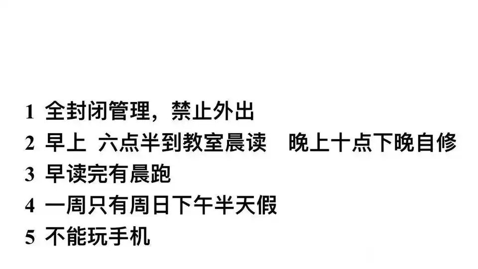

『猫见爱』盐酸希汐片🏳⚧
@HiyouNeko
我高三2017年，7点多早读踩点起床，早读睡觉睡到第二节课下课，然后早会听校长逼逼赖赖，回来上两节课中午开饭，下午3节课吃饭，7点晚自习搬张桌子去天台或其他没人的黑暗角落打个台灯自己刷题到9点休息一会儿，学习收尾10点回宿舍搓炉石12点睡觉。你们现在怎么这么卷

简律·繁律（互fo私信）
@jianlvup
如果给你一百万重读高三你愿意吗?
学校规定是: https://t.co/ML8RCE1zMx